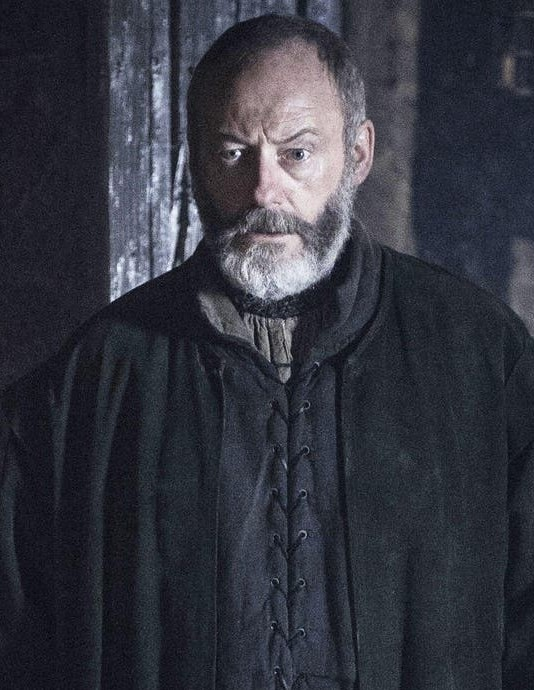
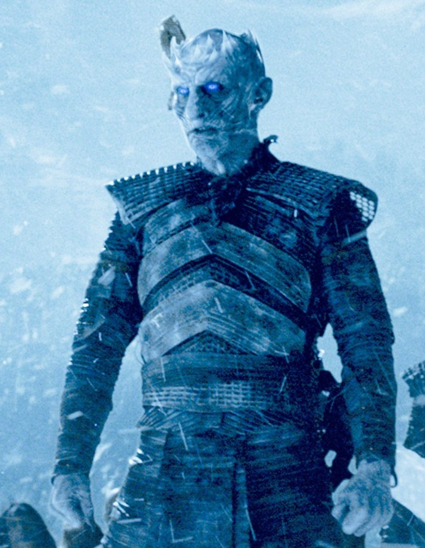
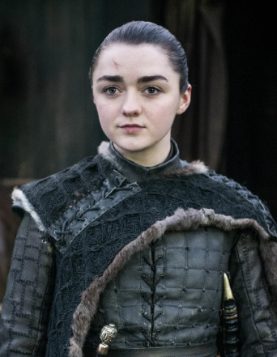
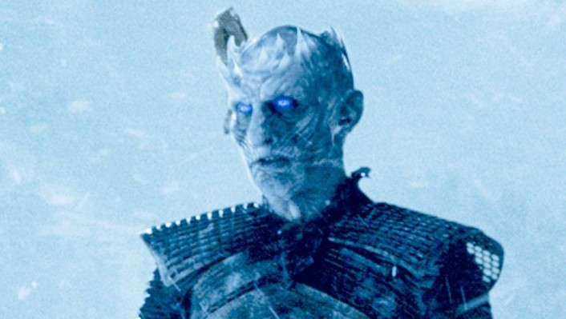
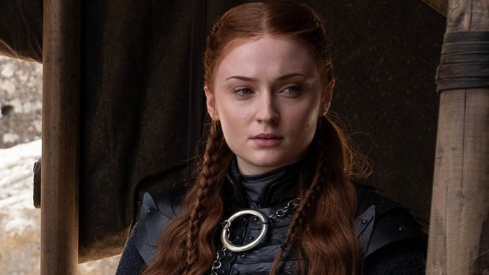
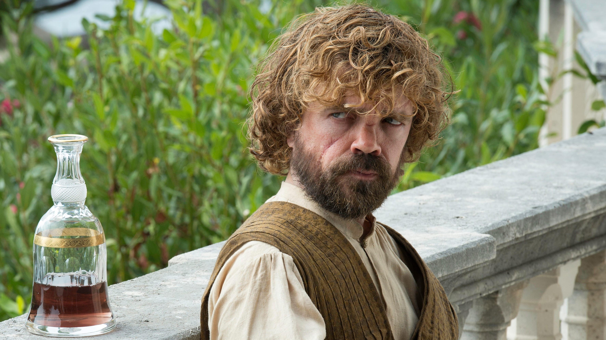

Born and Brought Up as the Bastard of Ned Stark in Winterfell
Joined the Night's Watch to serve the people of Westeroes
Returned to winterfell and won Battle of Bastards over Ramsay
Popularly Known as The White Wolf and The King in the North
Targaryen:Undisputed and rightful heir to the Iron Throne
Befriended the wildlings and resolved the ethnic issues
Meet My Lovers
Danaerys Targaryen
Ygritte
Look What People think about me
Jon and I have been together in the entire Night's Watch. He is
simply awesome. He is affable, friendly and caring. He even let me
keep my love 'Gilly' in the castle black. He sent me to the master's
Citadel on request

I've Served Jon as an advisor. He is innocent and kind dude. He has
all the qualities of a king. If I had a daughter, I would have
definitely married her to Jon Snow. Of Course, who doesn't want a
son-in-law like him

Jon Snow shouldn't have existed. He is such a filthy, useless and
dumb guy. I would have turned the entire westeroes as walking dead
but he became and obstacle for me. He even took away the wildlings
who were my first target

Jon and I are half-siblings but in reality he is my cousin. He is a
very lucky guy. Being a bastard he shouldn't have even got any
proper life but above all he got to get laid with Danaerys, What
else would be better.
My achievements and honours
Youngest Lord Commander of Night's Watch
Boldly faced and killed a White Walker
Adored heavily by common masses
Won Over the cruel and evil Ramsay Bolton
Hailed the King in the North
Even Death wasn't strong enough to kill me
Fortunate enough to make out with Danaerys
Saved people by Killing Danaerys in the end
What I think about people

Check for Honest Opinion
The Night King is a lethal creature. He holds the ability to employ
a cemetery and exploit the entire world. There are only 2 options
for people. You either live or you work for the night king, no third
option
The Night king is no dangerous one. You got an inch of dragon glass
or valyrian steel, you can demolish him into dust. You don't even
need to apply force. Of course, he has his strengths but his
weakness overrlues his strength

Check for Honest Opinion
Sansa is a very fine woman. I'm lucky that she is my sister although
she has never been good to me, I love her a lot and she respects me too
the only disheartening is that she always acted like she never did
approve my relationship with Dany
The Night king is no dangerous one. You got an inch of dragon glass
or valyrian steel, you can demolish him into dust. You don't even
need to apply force. Of course, he has his strengths but his
weakness overrlues his strength
Check for Honest Opinion
Lady Melisandre is the actual hero to whom all the credits of my grandeur
should be credited. She brought me back from the dead. what else can someone
expect better and bigger than this. She gifted me with my life
The Night king is no dangerous one. You got an inch of dragon glass
or valyrian steel, you can demolish him into dust. You don't even
need to apply force. Of course, he has his strengths but his
weakness overrlues his strength

Check for Honest Opinion
The Night King is a lethal creature. He holds the ability to employ
a cemetery and exploit the entire world. There are only 2 options
for people. You either live or you work for the night king, no third
option
The Night king is no dangerous one. You got an inch of dragon glass
or valyrian steel, you can demolish him into dust. You don't even
need to apply force. Of course, he has his strengths but his
weakness overrlues his strength